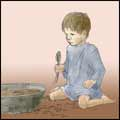

All | Foundation Truth | Treasures of the Kingdom | Dear Princess | Books | Sermons | Articles | Tracts

Isabel C. Byrum, 1919
Copyright: Public Domain
Main subject: Biography
Published: 2003
Last edited: November 18, 2004
He knew only that he existed, and that from day to day there were many things happening about him…a great many of which were distasteful to him. But all that took place he quietly endured, thinking that it was the best that there was in life for him.
from Life in the Poorhouse
The Poorhouse Waif and His Divine TeacherA True Story